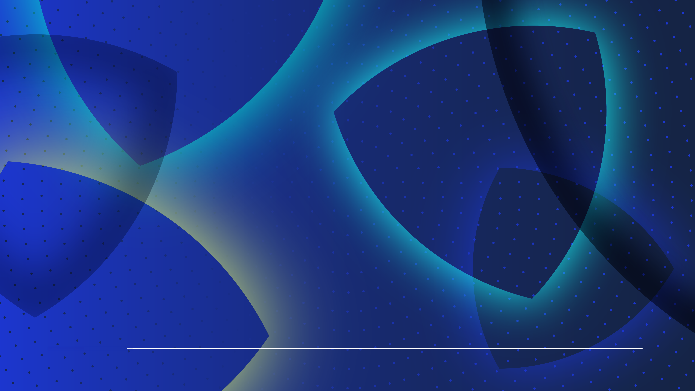
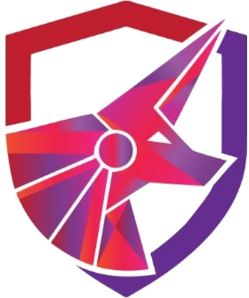
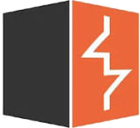

Defence in Depth How layered controls stop attackers, from first foothold to final impact
JCSC | GCSC · Defence in Depth
TLP:CLEAR
Welcome and introductions. Introduce yourself and the Jersey and Guernsey Cyber Security Centres: the CSCs help individuals and businesses prepare for and respond to cyber threats, and handle incidents across the islands every week. Frame the session: today is a tour of the controls defenders actually use, layer by layer, followed by who attacks us, how real attacks happen, and how students can build skills for a career. Encourage questions throughout; there is also a questions slide at the end. This material is TLP:CLEAR, so students can share it freely. 
Section 01
Introduction Why one control is never enough, and how attacks unfold
JCSC | GCSC · Defence in Depth
TLP:CLEAR
Section 1 sets up the idea that runs through the whole lecture: no single control is perfect, so we layer them. We will then look at the stages of a typical attack, because each stage is an opportunity to detect and stop it. 01 · Introduction
“Attackers only need to succeed once. Defenders need to succeed all the time.”
Defence in depth turns this around. Layer independent controls so an attacker has to beat every one of them, while we only need one to catch them.
JCSC | GCSC · Defence in Depth
TLP:CLEAR
This is the defender's dilemma. An attacker can try thousands of times and only needs one success; we have to get it right every time. Defence in depth flips that. A real intrusion is a chain of steps: get in, run code, escalate, move, steal or encrypt. The attacker has to succeed at every link without being noticed, while the defender only needs one control to fire. The idea comes from military doctrine: instead of one strong wall, several lines that slow, channel and expose an attacker. On the right are our pillars: Prepare, Protect and Defend, with Resilience at the centre. Prepare means backups, plans and knowing your estate. Protect means the preventive controls in Sections 2 to 5. Defend means detecting and responding when prevention fails. Ask the room: what single security control do you think organisations over-rely on? Common answers are antivirus, the firewall or passwords. 01 · Introduction
Layers of defence
Each section of today's lecture is one layer. People, identity and process run through all of them.
Physical security
Perimeters, access control, CCTV
Section 04
Network security
Firewalls, segmentation, NAC, email, backups
Section 03
Host security
Patching, EDR, hardening, logging, identity
Section 02
Application security
Authentication, input handling, WAFs
Section 05
Data
Encryption, classification, backups
What we protect
JCSC | GCSC · Defence in Depth
TLP:CLEAR
Walk from the outside in. Physical security keeps people away from the hardware. The network controls what can connect, what can talk to what, and what gets out. Hosts, mostly Windows in business, are where users work and where malware runs. Applications, especially web applications, are what we expose to the internet. At the centre is the data: the thing attackers actually want to steal, encrypt or destroy. No layer is perfect. A phishing email walks straight past the physical and network layers, which is why the host and identity controls matter. A stolen laptop bypasses the network entirely, which is why we encrypt the data. People, identity and process are not a separate ring: they cut across every layer. Section 6 looks at who attacks and Section 7 at how, so you can map each attack back to the layers that should have stopped it. 01 · Introduction
Stages of an attack
Every stage of an attack is another chance for defenders to catch it.
Phishing, exposed RDP or VPN, stolen passwords
Catch it with:
Email filtering MFA Patching Stage 2
Execution and
Malware runs and survives a reboot
Catch it with:
Application control EDR Hardening Stage 3
Privilege
Dumps hashes, becomes an administrator
Catch it with:
Least privilege LAPS Central logging Maps the network, moves between hosts
Catch it with:
Segmentation Canary tokens SIEM alerts Stage 5
Exfiltration
Steals data, then encrypts or wipes
Catch it with:
Egress filtering Immutable backups Incident response Explore the tactics and techniques: MITRE ATT&CK Navigator at mitre-attack.github.io/attack-navigator
JCSC | GCSC · Defence in Depth
TLP:CLEAR
These five stages are a simplification of the MITRE ATT&CK tactics; the Lockheed Martin Cyber Kill Chain is a similar older model. Students should look up ATT&CK: it is the common language defenders use to describe attacker behaviour. Stage 1, initial access: phishing, password spraying, or exploiting an internet-facing system such as a VPN. Stage 2, execution and persistence: the attacker's code runs and sets up a way to survive reboots, such as a scheduled task or service. Stage 3, privilege escalation and credential access: dumping password hashes, finding admin credentials. Stage 4, discovery and lateral movement: mapping Active Directory and moving to servers, file shares and backups. Stage 5, exfiltration and impact: stealing data, then encrypting or wiping. The key teaching point: the further right we catch an attack, the more expensive it is. But because there are so many stages, an attacker who gets past one control still has many more chances to trip an alarm. Each control listed here appears later in the lecture. Section 02
Windows infrastructure security Securing the endpoints and servers most organisations run on
JCSC | GCSC · Defence in Depth
TLP:CLEAR
Most businesses, including in Jersey and Guernsey, run on Windows desktops and servers with Active Directory or Entra ID. That makes Windows the most common battleground. This section covers seven controls: patching, antivirus and EDR, hardening, logging, application control, identity and encryption. 02 · Windows infrastructure security
Patching
Every patch tells attackers where the hole was. The race starts the day it is released.
Attackers compare patched and unpatched code to build exploits, sometimes within days. Internet-facing systems such as VPNs, firewalls and mail servers come first. Prioritise anything on CISA's Known Exploited Vulnerabilities list. Patch everything: firmware, browsers, third-party apps and network kit, not just Windows. Measure it: know how long critical patches take to reach every device. CISA KEV catalogue: cisa.gov/known-exploited-vulnerabilities-catalog
Case study
WannaCry, 2017 Microsoft fixed the SMBv1 flaw (MS17-010) on 14 March 2017.
WannaCry used it on 12 May 2017, spreading worldwide and disrupting the NHS.
Systems with the patch were not vulnerable to its spreading mechanism.
JCSC | GCSC · Defence in Depth
TLP:CLEAR
Why patch? Every security update is effectively a public announcement of a vulnerability. Attackers diff the patched and unpatched binaries to work out the flaw and write an exploit, which is why there is a race from the moment a patch ships. Prioritise: internet-facing systems first, then anything on the US CISA Known Exploited Vulnerabilities (KEV) catalogue, which lists flaws seen being exploited in the wild. Patching is not just Windows Update. Firewalls, VPN appliances, printers, hypervisors, browsers and third-party software all need updating, and they are often forgotten. WannaCry is the classic example. Microsoft released MS17-010 on 14 March 2017. On 12 May 2017 WannaCry used the leaked EternalBlue exploit against unpatched machines and spread as a worm, affecting organisations around the world including large parts of the NHS. Nearly two months of warning was not enough for many organisations. Ask: why do organisations delay patching? Answers: fear of breaking things, downtime windows, unknown assets, legacy systems. The answer is testing rings, an asset inventory, and measuring time to patch. 02 · Windows infrastructure security
Antivirus and EDR
Antivirus looks for known bad files. EDR watches behaviour and gives responders the tools to act.
Traditional antivirus Endpoint detection and response (EDR) What it watches Files on disk Processes, memory, network connections, registry and logons How it detects Signatures of known malware Behaviour, such as Word launching PowerShell What it can do Quarantine or delete a file Isolate a host, kill processes, collect evidence What it needs Regular signature updates People watching the alerts: an in-house SOC or a managed service (MDR)
JCSC | GCSC · Defence in Depth
TLP:CLEAR
Traditional antivirus compares files against signatures of known malware. It is still useful, but attackers change their malware constantly and increasingly use legitimate tools, so signatures alone miss a lot. EDR records what happens on the endpoint: which process started which, what it connected to, what it changed. It detects suspicious behaviour, such as Microsoft Word spawning PowerShell, or a process reading LSASS memory to steal credentials. Critically, EDR lets a responder act remotely: isolate the machine from the network while keeping the EDR connection, kill processes, and pull files and timelines for investigation. Examples include Microsoft Defender for Endpoint, CrowdStrike Falcon and SentinelOne. Open-source options such as Wazuh provide host monitoring. The catch: EDR generates alerts, and alerts need people. Without a security operations centre or a managed detection and response provider watching 24 hours a day, an alert at 2am on a Saturday may not be seen until Monday, by which point ransomware has run. 02 · Windows infrastructure security
Operating system hardening
Out of the box, Windows favours compatibility. Hardening switches off what you don't need.
CIS Level 1 A practical baseline for every system. Low impact on usability, so apply it widely.
CIS Level 2 Extra protection for high-security systems. Can break features, so test before you deploy.
Quick wins Disable SMBv1, LLMNR and NetBIOS Remove local admin rights; use LAPS Enforce SMB signing Turn on Credential Guard Block internet macros in Office Apply with Group Policy or Intune; check compliance with CIS-CAT or Microsoft security baselines.
JCSC | GCSC · Defence in Depth
TLP:CLEAR
The Center for Internet Security (CIS) publishes free benchmarks for Windows, Linux, cloud platforms and much more. Level 1 is the essential baseline: settings that improve security without much impact on how people work. It should be applied almost everywhere. Level 2 is for environments where security matters more than convenience. It goes further and can break functionality, so it needs testing. Quick wins that attackers exploit constantly: SMBv1 is the protocol WannaCry used. LLMNR and NetBIOS name resolution let tools like Responder steal password hashes, which we will see in Section 7. Local admin rights let malware install itself and dump credentials; LAPS gives every machine a unique, rotating local admin password so one stolen password doesn't unlock the whole estate. SMB signing prevents NTLM relay. Credential Guard protects credentials in memory. Blocking macros from internet-sourced Office files closed off a long-standing malware route. Tools: apply settings with Group Policy or Intune, and measure compliance with CIS-CAT or the Microsoft Security Compliance Toolkit. 02 · Windows infrastructure security
Logging and SIEM
Logs left on a machine are the first thing an attacker deletes. Send them somewhere they can't reach.
Attackers clear local logs to cover their tracks. Local logs roll over, and vanish when a disk is encrypted or wiped. Correlation: one failed logon is noise; hundreds across many accounts is password spraying. Investigations often start weeks later, so keep enough history. Add Sysmon for richer process and network detail. ACSC logging guidance: github.com/AustralianCyberSecurityCentre/windows_event_logging
Collect these
Windows event IDs 4732
Added to a local security group
7045
New service installed
Open-source SIEMs include Graylog, Wazuh and Elastic. JCSC publishes Graylog-IR on GitHub.
JCSC | GCSC · Defence in Depth
TLP:CLEAR
Why ship logs to a remote system? Four reasons. First, attackers clear logs: event ID 1102 records the security log being cleared, and on its own is a strong signal. If the only copy is on the compromised machine, the evidence is gone. Second, local logs are small and roll over quickly, and they disappear entirely if ransomware encrypts the disk. Third, a SIEM (security information and event management system) correlates events across many machines. One failed logon means nothing. Hundreds of failed logons, one per account, across the whole domain in ten minutes is password spraying. Fourth, retention. Intrusions are often discovered weeks or months later, and investigators need to go back to the first day. The event IDs on the right are a starting set. Process creation (4688) needs command-line logging turned on to be really useful. Sysmon, a free Microsoft Sysinternals tool, adds detailed process, network and file events. SIEM options include Graylog, Wazuh, Elastic, Splunk and Microsoft Sentinel. JCSC has published Graylog-IR, an open-source build for incident response, on GitHub at JCSC-JE/Graylog-IR. Students can deploy it in a home lab. 02 · Windows infrastructure security
Sysmon
Windows barely logs what attackers do. Sysmon, a free Microsoft tool, fills the gap.
Records every process with its full command line, parent and file hash, so malware stands out. Links each network connection and DNS lookup to the process behind it, exposing command-and-control. Flags credential theft and code injection that normal logging misses. Writes to its own event log, so it ships to a SIEM like any other Windows log. Free, part of Sysinternals. Tune it with a community config (SwiftOnSecurity, sysmon-modular) and deploy via Group Policy or Intune.
Watch these
Sysmon event IDs 1
Process created (command line + hash)
3
Network connection, per process
10
Process access (LSASS dumping)
11
File created in temp or startup
Logs land in Microsoft-Windows-Sysmon/Operational, then forward to your SIEM.
JCSC | GCSC · Defence in Depth
TLP:CLEAR
Sysmon, short for System Monitor, is a free tool from Microsoft Sysinternals. It is one of the highest-value things a defender can deploy for free, because standard Windows logging is surprisingly thin about what attackers actually do on a host. Once installed, Sysmon runs as a service and driver that survive reboots and record detailed activity to its own event log channel, Microsoft-Windows-Sysmon/Operational, which you forward to a SIEM like any other log. Why it matters, event by event. Event ID 1, process creation, is the single most useful: it captures the full command line, the parent process and a file hash, so you can spot, for example, Word launching PowerShell with an encoded command. Event ID 3 ties every network connection to the process and user that made it, and Event ID 22 does the same for DNS queries, which together expose malware calling home to command-and-control, even over DNS. Event ID 10, process access, detects one process reading another's memory, the classic sign of LSASS credential dumping. Two more worth knowing beyond the slide: Event ID 8 catches remote thread creation, a common code-injection technique, and Event ID 11 flags files dropped into temp and startup folders. Sysmon is not a detection product on its own; it is a sensor. Its value comes from a good configuration and somewhere to send the logs. Point students at the well-known community configs: SwiftOnSecurity's sysmon-config and Olaf Hartong's sysmon-modular, both on GitHub, which ship sensible rules and exclude a lot of normal noise. Deployment: push the binary and config with Group Policy or Intune across the estate, and update the config as you tune out false positives such as antivirus, backup agents and browsers. Tie this back to the previous slide: Sysmon is what gives the SIEM the rich process, network and DNS detail that the built-in Windows event IDs alone do not. It pairs naturally with the application-control and EDR topics that follow. 02 · Windows infrastructure security
Application control
Allowlisting flips the model: only approved software runs, so an unknown program simply will not start.
AppLocker rules allow software by publisher (digital signature), file path or file hash. Block programs running from folders users can write to, such as Downloads, AppData and Temp. Start in audit mode, review what would be blocked, then enforce. Microsoft treats AppLocker as defence in depth, not a security boundary. For stronger control, use App Control for Business (formerly WDAC). Watch for
Living off the land Attackers abuse trusted, signed Windows tools such as PowerShell, mshta, rundll32 and certutil to slip past allowlists.
Restrict or monitor them too. The LOLBAS project lists the binaries to watch.
JCSC | GCSC · Defence in Depth
TLP:CLEAR
Antivirus is a blocklist: it tries to recognise bad things. Application control is an allowlist: only things we have approved can run. That is a much stronger position, because it doesn't matter whether the malware is new. AppLocker is built into Windows Enterprise and Education editions. Rules can be based on the publisher's digital signature (the most maintainable), the file path, or a file hash. The single most valuable rule set: stop execution from user-writable locations. Most malware is downloaded to, or dropped in, the user's Downloads, AppData or Temp folders. If nothing can run from there, a huge amount of commodity malware fails. Deploy in audit mode first. You will discover a surprising amount of software running from user folders, such as Teams installers and browser updaters. Be honest about limits: Microsoft describes AppLocker as a defence-in-depth feature rather than a security boundary. App Control for Business, previously called Windows Defender Application Control, is the stronger option. Living-off-the-land binaries (LOLBins) are legitimate signed Windows tools that attackers use to download and run code. The LOLBAS project documents them. 02 · Windows infrastructure security
Identity and access management
Attackers would rather log in than break in. Identity is the perimeter now.
Single sign-on One identity for every app: enforce MFA once and disable leavers in one place.
Least privilege Separate admin accounts, tiering and just-in-time access. No one reads email as an admin.
Strong MFA FIDO2 keys and passkeys resist phishing. SMS codes and push prompts can be relayed or spammed.
The catch SSO concentrates risk. Guard the identity provider and watch its sign-in logs.
JCSC | GCSC · Defence in Depth
TLP:CLEAR
With staff working from anywhere and data in the cloud, there is no network edge that everything sits behind. What protects your email, files and apps is the login. Attackers know this: stolen and phished credentials are one of the most common ways in, and they need no exploit at all. Single sign-on means one identity provider, such as Entra ID, Okta or Google, for every application. You enforce MFA and conditional access in one place, you get one place to see sign-ins, and when someone leaves you disable one account instead of hunting through 40 apps. Least privilege: admins should have a separate account for admin work, and never use it for email or browsing. Admin tiering keeps domain admin credentials off ordinary workstations. Just-in-time access grants privileges only when needed, for a limited time. MFA is not all equal. SMS codes can be intercepted or SIM-swapped, app codes can be phished in real time, and push prompts can be spammed until a tired user accepts. FIDO2 security keys and passkeys are bound to the real website, so they resist phishing. The catch: SSO puts all your eggs in one basket. Protect the identity provider as a crown jewel. 02 · Windows infrastructure security
Data protection and encryption
With BitLocker, a stolen laptop costs you hardware, not data.
Encrypts the whole volume; the key is sealed in the TPM chip. Add a start-up PIN on laptops: TPM-only protection can be bypassed with physical access on some hardware. Store recovery keys in Entra ID or Active Directory, or a locked-out user means lost data. It protects data at rest only. Once a user logs in, malware sees the files unencrypted. Beyond the disk
Protecting the data itself Classify data so you know what matters most Encrypt USB drives with BitLocker To Go Data loss prevention rules for email and cloud storage Backups: see Section 03 JCSC | GCSC · Defence in Depth
TLP:CLEAR
BitLocker is Windows' full-volume encryption. Without the key, a removed disk is just random data, so a lost or stolen laptop becomes a hardware problem rather than a reportable data breach. The key is protected by the TPM, a security chip on the motherboard, which only releases it if the boot process hasn't been tampered with. TPM-only mode is convenient but has weaknesses: researchers have shown that on some hardware the key can be sniffed from the bus between the TPM and the CPU with physical access. Adding a pre-boot PIN defeats this. Recovery keys must be escrowed to Entra ID or Active Directory. Otherwise a firmware update or a forgotten PIN means permanent data loss. Be clear about what BitLocker does not do. It protects data at rest. While the user is logged in, the volume is unlocked, so ransomware or an attacker on the machine sees everything. Data protection is wider than disk encryption: know what data you hold and where (classification), encrypt removable media, use data loss prevention rules, and keep good backups, which we cover in the network section. Section 03
Network security Controlling what can connect, what can talk, and what gets out
JCSC | GCSC · Defence in Depth
TLP:CLEAR
The network layer decides who can reach what. We cover nine topics: firewalls and IPS, switch security, content filtering, segmentation, wireless, remote access, email security, backups and deception. 03 · Network security
Firewalls and IPS
Firewalls shrink the attack surface to what the business needs. Intrusion prevention inspects what is left.
Default deny Block everything, then allow only what the business needs. Every open port needs defending.
Stateful firewalls Track whole connections, and identify applications and users, not just ports.
Intrusion prevention Blocks traffic matching known exploit signatures, buying time while you patch.
Egress filtering Control outbound traffic too: stop malware calling home and data leaving. Block outbound SMB.
JCSC | GCSC · Defence in Depth
TLP:CLEAR
Why do firewalls protect? Because every service exposed to the internet is something an attacker can probe and exploit. A firewall with a default-deny policy means only the services the business deliberately chose are reachable. Stateful firewalls track connections, so a reply is only allowed back in if it belongs to a conversation started from inside. Next-generation firewalls add application and user awareness: they can tell the difference between web browsing and a remote access tool, both on port 443. Intrusion prevention systems inspect traffic for known exploit patterns and drop it inline. They are valuable for virtual patching: blocking exploitation of a known flaw while the real patch is tested. Egress filtering is the most overlooked part. Most firewalls allow everything outbound. Restricting outbound traffic stops malware reaching its command-and-control servers and makes data theft harder. Blocking outbound SMB on TCP port 445 stops a whole class of password-hash leaks, which we will see in Section 7. Remember host firewalls too: Windows Firewall on every laptop limits lateral movement inside the network. 03 · Network security
Network switch security
If anyone can plug into a wall port and join the network, your perimeter is the front door.
802.1X network access control: a device must authenticate before the port opens. Unknown devices go to a quarantine VLAN. Port security: limit MAC addresses per port and shut down unused ports. DHCP snooping and dynamic ARP inspection stop rogue DHCP servers and ARP spoofing. BPDU guard stops someone plugging in their own switch. Remember
MAC filtering isn't enough MAC addresses are easy to spoof.
Proper NAC checks identity, using certificates, and device health before granting access.
JCSC | GCSC · Defence in Depth
TLP:CLEAR
Many organisations spend heavily on the internet edge and then let any device that plugs into a meeting-room port join the corporate network. Network access control using 802.1X makes the switch port ask the device to authenticate, ideally with a machine certificate, before it gets any access. Devices that fail are put in a quarantine or guest VLAN. Port security limits how many MAC addresses can appear on a port, which stops someone adding a hub or small switch. Unused ports should be administratively shut down. DHCP snooping lets the switch know which ports are allowed to hand out IP addresses, stopping a rogue DHCP server from redirecting traffic. Dynamic ARP inspection uses that information to stop ARP spoofing, a classic man-in-the-middle technique. BPDU guard shuts a port if a switch is plugged into it. MAC address filtering on its own is weak: any attacker can read the MAC of a printer or phone and copy it. NAC that checks certificates and device health is far stronger. These are all features of business-grade switches that are often left switched off. 03 · Network security
Content filtering
Stop users reaching malicious sites, and stop malware reaching its controllers.
DNS filtering Block known-bad and newly registered domains at the resolver. Cheap and covers every device. Quad9 is a free option.
Web gateway Filter sites by category and reputation, scan downloads and log who went where.
TLS inspection Restores visibility into encrypted traffic, but raises privacy questions: exempt banking and health sites.
JCSC | GCSC · Defence in Depth
TLP:CLEAR
Content filtering works in both directions. It stops users from reaching phishing pages and malware downloads, and it stops infected machines from contacting the attacker's infrastructure. DNS filtering is the cheapest, broadest control: almost every connection starts with a DNS lookup, so blocking malicious domains at the resolver protects every device. Blocking newly registered domains is surprisingly effective, because phishing and malware campaigns often use domains only days old. Protective DNS services such as Quad9 are free; commercial options add reporting. A secure web gateway or proxy adds category filtering, reputation, download scanning and an audit trail of browsing. The challenge is encryption. Almost all web traffic is HTTPS, so a gateway can only see the domain name unless it performs TLS inspection, decrypting and re-encrypting traffic with its own trusted certificate. That gives visibility but raises privacy, legal and certificate-trust issues, so organisations usually exempt categories such as banking and health. Discussion point: where is the line between security monitoring and employee privacy? 03 · Network security
Network segmentation
Segmentation decides how far an attacker gets after the first foothold. That is why it is one of the most effective controls.
Limits lateral movement: a compromised laptop can't reach domain controllers or backups directly. Contains ransomware to one segment instead of the whole estate. Isolates risky devices: guest Wi-Fi, IoT, CCTV and building systems. Server LAN
AD, files, apps
Workstation LAN
user devices
Air gap — no network path
Case study
French supermarkets, 2026 Attackers reached the software that controls supermarket fridges and freezers and forced them to heat up overnight.
About 400 stores across several chains were hit, spoiling food worth millions of euros; some units reached 50C.
Refrigeration is OT: it belongs on its own isolated network, not reachable from the internet.
JCSC | GCSC · Defence in Depth
TLP:CLEAR
Assume something will get in: a user will click a link or a laptop will get infected. Segmentation decides what happens next. A flat network, where every device can talk to every other device, is an attacker's dream: from one laptop they can reach the domain controllers, file servers and backups. Ransomware spreads across a flat network in minutes. Segmentation divides the network into zones, such as users, servers, management, backups, guest and IoT, with firewall rules between them that allow only the traffic each needs. A user laptop has no reason to talk to another user laptop, or to the backup server's management interface. It also creates choke points, the places where traffic crosses between zones, which are ideal for logging and inspection. The diagram shows the idea: the internet reaches the network only through the firewall, which separates the DMZ for public-facing servers, the server LAN and the workstation LAN, and allows only the traffic each zone needs. The IoT and OT network is air-gapped, with no network path to the rest, the strongest form of separation, used where safety or legacy systems demand it. The case study is a recent example of why operational technology must be segregated. In October 2026 attackers reached the software that regulates refrigeration in hundreds of French supermarkets, across chains including Coopérative U, Intermarché, Carrefour and Monoprix, and forced the fridges and freezers to heat up overnight, some to around 50C. About 400 stores were affected and food worth millions of euros was spoiled, with some stores disconnecting from the internet to stop the spread. The flaw was in older cold units whose security software could not be updated. The lesson: refrigeration and other building and industrial systems are operational technology, and should sit on their own isolated or air-gapped network, never reachable from the internet. An older comparable case is Target in 2013, where attackers used a heating and ventilation contractor's stolen credentials to reach the point-of-sale systems and steal about 40 million payment card records. Zero trust takes this further with micro-segmentation: every connection is authenticated and authorised, wherever it comes from. 03 · Network security
Wireless security and monitoring
Wi-Fi leaks past your walls. Secure it properly, then watch the airwaves for attacks.
Use WPA3, or WPA2-Enterprise with 802.1X and certificates, instead of one shared password. Keep guest and IoT networks separate from the corporate network. Turn off WPS: its PIN can be brute-forced. Watch for evil twins: fake access points that copy your network name to capture logins. Monitor it
nzyme An open-source wireless intrusion detection system. It records Wi-Fi management frames to detect:
Rogue and look-alike access points Deauthentication floods Known attack devices, such as Wi-Fi Pineapples JCSC | GCSC · Defence in Depth
TLP:CLEAR
Wireless is the one network you can attack from the car park. Radio doesn't stop at the office wall. Use WPA3 where possible. For corporate networks, WPA2 or WPA3 Enterprise with 802.1X means every user or device authenticates individually, ideally with certificates, rather than everyone sharing one password that never changes and that every former employee still knows. Separate guest and IoT networks from the corporate network: this is segmentation again. WPS, the push-button or PIN pairing feature, has a design flaw that lets the PIN be brute-forced, so turn it off. An evil twin is a fake access point using the same name as yours, often combined with deauthentication attacks that knock users off the real network so they reconnect to the fake one. Monitoring matters because these attacks leave no trace in your firewall logs. nzyme is an open-source wireless intrusion detection system: sensors record 802.11 management frames and alert on rogue or impersonating access points, deauthentication floods and the fingerprints of known attack tools such as the Wi-Fi Pineapple. It is a good home-lab project. 03 · Network security
Remote access and VPNs
Remote access sits on the internet by design. Require MFA on every login and patch it first.
Traditional VPN appliance WireGuard Tailscale What it is IPsec or SSL VPN gateway at the network edge Modern VPN protocol, small and fast Mesh VPN built on WireGuard, tied to SSO Strengths Mature, widely supported Simple to audit, modern cryptography No open inbound ports; per-user access rules Watch out for Frequent critical flaws: patch within days You manage keys; no user identity built in Relies on a third-party coordination service
JCSC | GCSC · Defence in Depth
TLP:CLEAR
Remote access has to be reachable from the internet, so it is one of the most attacked parts of any network. Traditional VPN appliances, using IPsec or SSL VPN, have had a long run of critical, actively exploited vulnerabilities across several major vendors in recent years. Ransomware groups and state actors scan for unpatched gateways within days of a disclosure. If you run one: MFA on every login, patch as an emergency, and watch its logs. WireGuard is a modern VPN protocol built into the Linux kernel. Its small codebase makes it easier to audit, and it uses a fixed set of modern cryptography. The trade-off is that it is a building block: it uses keys, not user accounts, so identity and key management are up to you. Tailscale builds a mesh network on top of WireGuard and ties it to your identity provider, so access rules can be written per user and per device. Devices connect outbound, so there is no inbound port to attack. The trade-off is reliance on Tailscale's coordination service; Headscale is an open-source alternative. This is a step towards zero trust network access: grant access to specific applications for verified users and devices, rather than to the whole network. 03 · Network security
Email security
Four DNS records stop others sending as you and protect mail in transit.
Record What it does Without it SPF Lists the servers allowed to send email for your domain Anyone can send mail claiming to be you DKIM Signs each message with a key published in DNS, proving who sent it and that it wasn't changed Forged or altered messages go unnoticed DMARC Tells receivers what to do when checks fail (none, quarantine or reject) and sends you reports Spoofed mail still lands in inboxes MTA-STS Makes other mail servers use verified TLS when delivering to you Attackers can downgrade the connection and read mail
Test your own domain at internet.nl.
JCSC | GCSC · Defence in Depth
TLP:CLEAR
Email was designed with no authentication: anyone can put any address in the From field. These DNS-based standards fix that. SPF (Sender Policy Framework) is a DNS record listing the servers allowed to send for your domain. DKIM (DomainKeys Identified Mail) adds a cryptographic signature to each message. The public key is in DNS, so the receiver can check the message really came from your domain and wasn't altered. DMARC ties them together. It requires the visible From domain to align with SPF or DKIM, tells receivers what to do with failures (p=none to monitor, quarantine, or reject), and sends you aggregate reports so you can see who is sending as you. The goal is p=reject. MTA-STS works in the other direction: it tells other mail servers that your domain supports TLS and that they must use it with a valid certificate, which stops downgrade attacks. TLS-RPT sends reports on failures. These records stop exact-domain spoofing of your organisation. They don't stop look-alike domains or compromised genuine accounts, which is what business email compromise in Section 7 uses. Exercise for students: run internet.nl's mail test against a domain you know and interpret the results. 03 · Network security
Backup and recovery
Ransomware gangs go after the backups first. Assume they will find yours.
3
copies of your data
Production plus two backups
2
different media
Such as disk and cloud object storage
1
offsite
Out of reach of fire, flood and theft
1
offline or immutable
Can't be changed or deleted, even by an admin
0
errors
Restores tested and verified regularly
Immutable storage (object lock or WORM) blocks changes and deletion until the retention period ends. Keep backup systems off the domain, with their own credentials and MFA.
JCSC | GCSC · Defence in Depth
TLP:CLEAR
Backups are the last line of defence against ransomware and wipers, and attackers know it. A standard step in a ransomware intrusion is to find and destroy the backups before encrypting anything, so the victim has no choice but to pay. The 3-2-1 rule is the classic: three copies, on two different types of media, one of them offsite. The modern extension, 3-2-1-1-0, adds one copy that is offline or immutable, and zero errors when you test a restore. Immutable means the backup cannot be modified or deleted until its retention period ends, even by an administrator with full credentials. Cloud object storage with object lock in compliance mode, and WORM (write once, read many) storage, provide this. If an attacker steals the backup admin password, they still can't delete the backups. Keep backup infrastructure separate: not joined to the main domain, with its own accounts and MFA, on its own network segment. Test restores. Know your recovery point objective, how much data you can afford to lose, and your recovery time objective, how long you can be down. Many organisations discover during an incident that restoring everything takes weeks. 03 · Network security
Deception engineering
Legitimate users have no reason to touch a decoy, so any touch is a high-confidence alert.
Canary tokens Fake files, keys, URLs and DNS names that alert you when touched. Free at canarytokens.org.
Honeypots Decoy servers, such as OpenCanary or T-Pot, that look valuable and log every move.
Honey accounts An unused but tempting admin account in AD. Any logon attempt is an attacker.
Prepare the battlespace You know your network; they don't. Put tripwires on the paths they must take.
JCSC | GCSC · Defence in Depth
TLP:CLEAR
Most security alerts are noisy, and analysts drown in false positives. Deception produces some of the highest-quality alerts available, because nobody legitimate should ever touch a decoy. Canary tokens, from Thinkst at canarytokens.org, are free tripwires: a Word document, a fake AWS key, a URL, a DNS name or a folder that sends you an alert when it is opened or used. Put a file called passwords.xlsx on a file share, or a fake cloud key in a code repository, and you will know when someone goes looking. Honeypots are decoy systems. OpenCanary, also from Thinkst, is a lightweight open-source honeypot that can impersonate a Windows file server or a network device. T-Pot, from Deutsche Telekom, bundles many honeypots and is great for watching internet-wide attacks. Honey accounts: create an admin-looking account in Active Directory that is never used. Any authentication attempt, or any request for a Kerberos service ticket against it, means someone is enumerating or attacking AD. Preparing the battlespace is the mindset: defenders have home advantage. We know what normal looks like, and we can place tripwires on the routes an attacker must take, such as file shares, Active Directory and credential stores. Section 04
Physical security If someone can touch a system, they can usually own it
JCSC | GCSC · Defence in Depth
TLP:CLEAR
Physical security is often forgotten in technical courses, but physical access defeats most technical controls: an attacker at the keyboard, or with the disk in their hand, has many more options. Five topics: access control, environmental controls and disaster management, asset protection, perimeter security and CCTV. 04 · Physical security
Access control
Control who gets through each door, and know who went where.
Badges plus a PIN or biometric for sensitive areas: a card alone can be lost, lent or cloned. Older 125 kHz proximity cards can be copied in seconds with cheap tools. Move to encrypted smart cards. Stop tailgating with turnstiles or airlock-style mantraps, and make challenging strangers normal. Sign visitors in, badge them and escort them. Remove access the day someone leaves, and review the access logs. A Flipper Zero: a cheap handheld that can read and clone unencrypted 125 kHz access cards in seconds.
Real-world testing
People hold doors open Physical penetration testers often get in with nothing more than a hi-vis vest, a confident walk or an armful of boxes.
Training staff to challenge politely is a control too.
JCSC | GCSC · Defence in Depth
TLP:CLEAR
Physical access control is authentication and authorisation for doors. The same principles apply: something you have (a badge), something you know (a PIN) or something you are (a fingerprint), with least privilege by zone. Many buildings still use 125 kHz proximity cards, which have no cryptography. Cheap handheld tools can read and copy them from a short distance in seconds. Modern encrypted smart cards, such as MIFARE DESFire, are far harder to clone. Tailgating, or piggybacking, is following an authorised person through a door. Turnstiles and mantraps, a pair of doors where only one can be open at a time, help, but culture matters most. People are polite and hold doors open, especially for someone carrying boxes. Visitor management, badges and escorts make strangers visible. Access logs let you investigate afterwards, and revoking access promptly when people leave is the physical equivalent of disabling their account. Ask the room: would you challenge someone without a badge in your workplace? What would make it easier to do so? 04 · Physical security
Environment and disaster management
Heat, water, fire and power cuts take systems down as surely as any attacker.
Power UPS for short outages and clean shutdowns; generators and dual feeds for longer ones.
Cooling Servers fail when they overheat. Redundant cooling with temperature and humidity alarms.
Fire and water Early smoke detection, gas suppression that spares equipment, and leak sensors.
Disaster recovery Continuity plans, a second site or cloud failover, and exercises to prove they work.
JCSC | GCSC · Defence in Depth
TLP:CLEAR
Security is about confidentiality, integrity and availability, and availability is the one environmental threats attack. Power: an uninterruptible power supply bridges short outages and allows a clean shutdown; generators handle longer outages; dual power feeds remove a single point of failure. Cooling: servers generate a lot of heat and fail quickly if air conditioning stops. Monitor temperature and humidity and alarm on thresholds. Fire and water: early-warning smoke detection, such as aspirating systems that sample air, gives time to act. Gas suppression systems put out fires without the water damage sprinklers would do to equipment. Leak detection under raised floors and near air-conditioning units catches water early. Consider what is above and around the server room too. Disaster management means planning for the site being unavailable: business continuity plans, disaster recovery plans with clear recovery time objectives, a secondary site or cloud failover, and exercises. Island context: think about single points of failure such as connectivity to the mainland, and test plans that assume key staff or suppliers are unavailable. 04 · Physical security
Asset and hardware protection
Hardware can be stolen, tampered with or swapped. Lock it, track it and dispose of it properly.
Lock server racks and comms cabinets; control and log who holds the keys. Use Kensington or cable locks for laptops and kit in shared spaces. Keep an asset register: you can't protect what you don't know you have. Set UEFI passwords, enable Secure Boot and disable booting from USB. Wipe or destroy drives before disposal, following NIST SP 800-88. Threat
Rogue devices A small computer or network implant hidden in a meeting room or plugged into a spare port gives an attacker a lasting foothold.
NAC (Section 03), locked comms rooms and regular sweeps help.
JCSC | GCSC · Defence in Depth
TLP:CLEAR
Rack locks and locked comms cabinets stop someone plugging a device into the core switch or pulling a disk from a server. Key control matters: who has the keys, and is it logged? Kensington slots and cable locks are a cheap deterrent against opportunistic theft of laptops and monitors in shared or public areas. An asset register is foundational: many of the controls in this lecture, from patching to EDR coverage, depend on knowing every device you own. Unknown devices are unpatched devices. Firmware settings matter: a UEFI password, Secure Boot and disabling boot from USB stop someone booting their own operating system to bypass Windows security, especially on machines without BitLocker. Disposal: old drives and devices leak data. Follow a standard such as NIST SP 800-88 to clear, purge or physically destroy media, and get certificates of destruction from disposal companies. Rogue devices are a real technique used by penetration testers and criminals: a small computer or network implant hidden behind a printer, calling home over 4G. NAC from Section 3 is the main technical defence. 04 · Physical security
Perimeter security
Layer physical defences like network ones, from the fence line to the server room.
Public area
Fences, lighting, signage
Grounds
Gates, barriers, bollards
Reception
Sign-in, turnstiles
Secure room
Badge plus PIN, logged
Deter Make the site look hard to get into: fences, lights, signs, visible cameras.
Detect Know when someone gets in: alarms, sensors, CCTV, guards.
Delay Slow them down: locks, several doors, secure cages.
Respond Someone acts on the alarm: guards, police, a call-out plan.
JCSC | GCSC · Defence in Depth
TLP:CLEAR
Physical security uses defence in depth just like the network: concentric zones, each with stronger controls, from the public street to the server room. The outer perimeter uses fences, lighting and signage, mostly as deterrence and to define the boundary. Vehicle barriers and bollards protect against vehicle attacks. Reception is a controlled entry point. The office uses badge access. The most sensitive zone, the server room or data centre hall, uses multi-factor access and full logging. The four Ds describe what each layer should do. Deter: make the target look difficult so an attacker picks somewhere else. Detect: know when someone has crossed a boundary. Delay: slow them down so the response arrives in time. Respond: there must be someone to act on the alarm, or detection is worthless. Link back to the network: the outer zones are like the firewall, the inner zones like segmentation, and CCTV and alarms are like the SIEM. 04 · Physical security
CCTV systems
Cameras deter, detect and provide evidence, but they are networked computers too.
Placement Cover entrances, exits and server rooms with enough light and resolution to identify a face.
Secure the cameras Change default passwords, patch firmware, isolate cameras on their own network. The Mirai botnet (2016) was built largely from cameras and recorders.
The law CCTV records personal data. The Data Protection (Jersey) Law 2018 and the Data Protection (Bailiwick of Guernsey) Law, 2017 both apply.
JCSC | GCSC · Defence in Depth
TLP:CLEAR
CCTV does three jobs: visible cameras deter, monitored cameras detect, and recorded footage provides evidence. Placement and image quality determine whether footage is useful: a camera that can't identify a face at the door isn't much help. Someone must actually watch or review it. Modern cameras and recorders are IP devices running embedded Linux, often with default passwords, unpatched firmware and remote access features enabled. In 2016 the Mirai botnet compromised huge numbers of internet-connected cameras and DVRs using default credentials and used them for some of the largest DDoS attacks seen at the time. So: change default passwords, update firmware, put cameras on their own network segment with no route to the corporate network, and don't expose recorders to the internet. CCTV captures personal data, so data protection law applies: the Data Protection (Jersey) Law 2018 in Jersey and the Data Protection (Bailiwick of Guernsey) Law, 2017 in Guernsey. In practice that means clear signs, a defined purpose, a sensible retention period, securing the footage, and handling subject access requests. The data protection authorities in each island publish guidance. Section 05
Web application security Protecting the applications we put on the internet
JCSC | GCSC · Defence in Depth
TLP:CLEAR
Web applications are where most organisations meet the internet, and they are built by people under deadline pressure. Eight topics: authentication and authorisation, input handling, client-side attacks, APIs, traffic filtering, encryption, configuration and the development lifecycle. PortSwigger's free Web Security Academy, in Section 8, has hands-on labs for almost all of these. 05 · Web application security
Authentication and authorisation
Authentication proves who you are. Authorisation decides what you may do. Confusing them is a top web risk.
Authentication: who are you? Passwords, MFA and passkeys; sessions and tokens. Attacks: credential stuffing and brute force. Defend with MFA, rate limits and breached-password checks.
Authorisation: what may you do? Check permissions on the server for every request. Broken access control is first in the OWASP Top 10 (2021).
GET /invoices/1042 → try 1043
JCSC | GCSC · Defence in Depth
TLP:CLEAR
These two words are often confused, so make the distinction crisp. Authentication answers who are you: passwords, MFA, passkeys, and then a session cookie or token that proves you logged in. Authorisation answers what are you allowed to do: can this user view this record, or perform this action? Authentication attacks include credential stuffing, which replays username and password pairs leaked from other breaches, and brute force. Defences are MFA, rate limiting and lockouts, and checking new passwords against known breached passwords. Authorisation failures are more common and often worse. Broken access control is number one in the OWASP Top 10 2021. The classic example is an insecure direct object reference: you log in, view your invoice at /invoices/1042, change the number to 1043, and see someone else's invoice because the server only checked that you were logged in, not that the invoice was yours. The rule: authorisation must be checked on the server, on every request, for every object. Hiding a button in the user interface is not access control. Lab suggestion: the access control topic in PortSwigger's Web Security Academy. 05 · Web application security
Client-side security
These attacks abuse the trust between your site, your users and their browsers.
Attack What happens Defence Stored XSS Attacker's script is saved, for example in a comment, and runs for every visitor Output encoding, Content Security Policy, HttpOnly cookies Reflected XSS Script in a crafted link is echoed straight back and runs for the victim who clicks it Output encoding, Content Security Policy CSRF Another site makes the victim's browser send a request to yours, cookies included Anti-CSRF tokens, SameSite cookies, re-authentication for key actions CORS misconfiguration Your API lets any origin read responses with the user’s credentials Allow only named, trusted origins; never reflect the Origin header
Current web application risks: OWASP Top 10:2025
JCSC | GCSC · Defence in Depth
TLP:CLEAR
Cross-site scripting (XSS) means an attacker gets their JavaScript to run in your site's context, in another user's browser. It can then read the page, act as the user, or steal session tokens. Stored XSS is the more dangerous form: the payload is saved, for example in a forum post, product review or profile name, and served to everyone who views it. Reflected XSS bounces off the server immediately, for example from a search parameter, so the attacker has to trick each victim into clicking a crafted link. DOM-based XSS happens entirely in client-side JavaScript. Defences: output encoding first, a Content Security Policy to restrict what scripts can run, and HttpOnly cookies so scripts can't read the session cookie. Cross-site request forgery (CSRF) abuses the fact that browsers automatically attach cookies. A malicious page submits a hidden form to your bank's change-email endpoint, and the request arrives with the victim's valid session. Anti-CSRF tokens and SameSite cookies stop this. CORS is a browser mechanism that relaxes the same-origin policy, letting other sites read your responses. Misconfigured, for example by reflecting any Origin header back while allowing credentials, it lets an attacker's site read a logged-in user's private data. 05 · Web application security
API security
APIs expose data and logic directly, without the guard rails of your front end.
OWASP API risk (2023) What goes wrong Defence API1: Broken object level authorisation Change an ID in the request and get someone else's data Check ownership of every object, on every request API3: Broken object property level authorisation The API returns or accepts fields it shouldn’t, such as isAdmin Return only the fields needed; allowlist writable fields API4: Unrestricted resource consumption No limits, so attackers scrape data or run up costs Rate limits, quotas and pagination API9: Improper inventory management Forgotten old versions and test endpoints stay online Keep an inventory; retire old versions
Full list: OWASP API Security Top 10:2023
JCSC | GCSC · Defence in Depth
TLP:CLEAR
Modern applications, mobile apps and single-page web apps talk to back-end APIs. Attackers skip the front end and call the API directly with tools like Burp Suite or Postman, so any check done only in the app's interface doesn't exist as far as they are concerned. OWASP publishes a separate API Security Top 10; the 2023 edition is current. API1, broken object level authorisation, is the API version of the invoice example earlier: change the ID and get another user's record. It is consistently the top API issue. API3 covers APIs that return whole database objects, including fields the app never displays, or that accept extra fields in an update, so a user can set isAdmin to true. This is sometimes called mass assignment. API4: without rate limits, attackers can scrape your entire customer database or run up cloud bills. API9: organisations lose track of old API versions, staging endpoints and undocumented APIs, which stay online, unpatched and unmonitored. Other good practice: use standard authentication such as OAuth 2.0 and OpenID Connect with short-lived tokens, validate requests against a schema, and log API activity. 05 · Web application security
Traffic filtering, bots and DDoS
Filter bad traffic before it reaches your application, but still fix the code behind it.
WAF A web application firewall inspects requests for attacks like SQL injection and XSS. Virtual patching buys time.
Bot management Rate limits, challenges and fingerprinting stop credential stuffing, scraping and fake sign-ups.
DDoS mitigation Network floods need upstream scrubbing or a CDN; application floods need rate limits and caching.
JCSC | GCSC · Defence in Depth
TLP:CLEAR
A web application firewall sits in front of the application and inspects HTTP requests. Rule sets such as the open-source OWASP Core Rule Set detect common attack patterns. A WAF is valuable for virtual patching: blocking exploitation of a known flaw in, say, a WordPress plugin, until it can be updated. But WAFs can be bypassed with encoding tricks, so they are a layer, not a fix. Bots now make up a large share of web traffic. Bad bots perform credential stuffing, scrape content and prices, hoard stock and create fake accounts. Bot management uses rate limiting, behavioural analysis, device fingerprinting and challenges. Distributed denial of service attacks aim to make a service unavailable. Volumetric attacks at layers 3 and 4 flood the network link and can only be absorbed upstream, by your ISP, a scrubbing service or a content delivery network such as Cloudflare or Akamai. Application-layer attacks at layer 7 send expensive requests, such as searches, and need rate limiting and caching. Hacktivist groups, which we meet in Section 6, regularly use DDoS against government and business websites because it is cheap and highly visible. 05 · Web application security
Encryption at rest and in transit
Encryption protects data when other layers fail, as long as the keys stay safe.
In transit TLS 1.2 at least, ideally 1.3. Turn on HSTS, switch off old protocols and automate certificate renewal.
At rest BitLocker on Windows, LUKS on Linux, and built-in encryption for databases and cloud storage.
Keys and passwords Keep keys apart from the data, in a KMS or HSM. Hash passwords with Argon2id or bcrypt: never encrypt them.
JCSC | GCSC · Defence in Depth
TLP:CLEAR
In transit: TLS protects data between the browser and the server, and between servers. Use TLS 1.2 as a minimum and prefer 1.3; disable SSL, TLS 1.0 and 1.1. HSTS tells browsers to always use HTTPS for your site, preventing downgrade attacks. Automate certificates with ACME, for example Let's Encrypt, so they never expire unexpectedly. Qualys SSL Labs offers a free server test. At rest: BitLocker for Windows and LUKS for Linux protect disks if hardware is stolen. Databases and cloud storage offer built-in encryption. Field-level encryption protects especially sensitive values even from database administrators. Encryption is only as strong as its key management. Keys stored next to the data, or hard-coded in source code, protect nothing. Use a key management service or hardware security module, and rotate keys. Passwords are a special case: they should be hashed, not encrypted, because you never need to recover the original. Use a slow, salted algorithm designed for passwords, such as Argon2id, bcrypt or scrypt, never a fast hash like MD5 or SHA-1. Remember the limits: at-rest encryption doesn't help if the attacker compromises the running application, which can decrypt everything. 05 · Web application security
Configuration hardening
Misconfiguration is in the OWASP Top 10 for a reason: default settings favour convenience.
Remove default accounts, sample apps and test pages
Turn off directory listing and detailed error messages
Set security headers: CSP, HSTS, X-Content-Type-Options
Run services with least privilege
Keep secrets out of code; use a secrets manager
No public cloud storage buckets by accident
Patch the whole stack, including plugins
Scan against a benchmark, such as CIS
JCSC | GCSC · Defence in Depth
TLP:CLEAR
Security misconfiguration is in the OWASP Top 10 because it is everywhere. Frameworks and servers ship with defaults that make development easy: verbose errors, sample applications, default admin accounts and permissive settings. Go through the checklist. Default credentials and sample pages are among the first things scanners look for. Directory listing and stack traces leak file names, versions and internal paths. Security headers are cheap and effective: Content-Security-Policy limits where scripts can load from, Strict-Transport-Security enforces HTTPS, and X-Content-Type-Options stops MIME-type sniffing. Least privilege applies to services: the web server should not run as root, and the database account used by the app should only have the permissions it needs. Secrets such as API keys and database passwords leak constantly through public code repositories. Use a secrets manager and secret scanning. Cloud storage buckets left publicly readable by mistake have caused many large data leaks. Patch the whole stack. In the islands, as elsewhere, outdated content management system plugins are a frequent way in, for example on WordPress sites. Finally, scan configurations against a benchmark such as CIS, ideally automatically in the deployment pipeline. 05 · Web application security
Secure development lifecycle
Build security in at every stage. Remember that much of your code was written by someone else.
01
Plan
Threat modelling, requirements
02
Build
Code review, static analysis
03
Test
Dynamic testing, pen tests
04
Release
Signed builds, an SBOM
05
Maintain
Patch dependencies, monitor
SolarWinds, 2020 Attackers hid a backdoor in signed Orion updates, installed by up to 18,000 customers.
XZ Utils, 2024 A contributor spent about two years earning trust, then hid a backdoor. Caught by chance.
Package registries Typosquatting and dependency confusion on npm and PyPI. Pin versions and scan dependencies.
JCSC | GCSC · Defence in Depth
TLP:CLEAR
A secure development lifecycle builds security into every phase rather than testing it at the end. Plan: threat modelling, asking what could go wrong, and security requirements. Build: peer code review, static analysis (SAST) and secret scanning. Test: dynamic testing (DAST) and penetration tests. Release: signed builds and a software bill of materials, an SBOM, listing every component. Maintain: patch dependencies and monitor in production. Software supply chain attacks target the things you build with rather than what you built. SolarWinds: in 2020 it emerged that attackers, attributed by the US and UK to Russia's foreign intelligence service, had compromised SolarWinds' build system and inserted a backdoor into signed updates of its Orion network monitoring product. Up to 18,000 customers installed the affected updates, and a small number of high-value targets were then exploited further. XZ Utils: in 2024 a Microsoft engineer, Andres Freund, noticed SSH logins on a test system were slightly slow, and found a backdoor in the xz compression library. A contributor had spent about two years building trust before inserting it. It was caught just before reaching major Linux releases. Package registries: attackers publish malicious packages with names close to popular ones (typosquatting), or with the same name as a company's internal package (dependency confusion). Defences: lockfiles and pinned versions, private registries or mirrors, dependency scanning, and least-privilege tokens in build pipelines. Section 06
Threat landscape Who attacks, and why
JCSC | GCSC · Defence in Depth
TLP:CLEAR
Now we know the controls, who are we defending against? Threat actors differ in motivation, resources and patience, and that changes which controls matter most. Four groups: nation states, hack groups, hacktivists and leakers, and insiders. 06 · Threat landscape
Nation states
States use cyber operations for espionage, disruption and influence, and in North Korea's case, money.
State Main aims Examples Russia Espionage, disruption, influence Sandworm: Ukraine power grid (2015), NotPetya (2017). APT29: SolarWinds (2020) China Espionage, pre-positioning in infrastructure Volt Typhoon in US critical infrastructure; Salt Typhoon in telecoms (2024) Iran Espionage, disruption, regional rivalry Target of Stuxnet (found in 2010); Shamoon wiper at Saudi Aramco (2012) North Korea Revenue for the regime, espionage WannaCry (2017); about $1.5 billion stolen from the Bybit exchange (2025) India Regional espionage Suspected groups such as SideWinder and Patchwork target South Asian governments
JCSC | GCSC · Defence in Depth
TLP:CLEAR
Nation-state actors have the most resources and patience. Their aims differ, which shapes how they behave. Russia: the GRU's Sandworm unit caused power cuts in Ukraine in December 2015 and released NotPetya in 2017, the most costly cyber attack to date by most estimates. APT29, linked to the SVR foreign intelligence service, was behind the SolarWinds compromise. China: large-scale espionage against governments and industry. Western governments warned that Volt Typhoon was pre-positioning in US critical infrastructure for possible future disruption, and Salt Typhoon breached major telecoms providers in 2024. Iran: Stuxnet, discovered in 2010, sabotaged centrifuges at Iran's Natanz enrichment plant and is widely attributed to the US and Israel. It is often described as the first cyber weapon to cause physical damage. Iran has since built its own capabilities, including the Shamoon wiper used against Saudi Aramco in 2012. North Korea: uniquely, its operations fund the state. The Lazarus Group and related clusters steal cryptocurrency at scale; the FBI attributed the theft of about $1.5 billion from the Bybit exchange in February 2025 to North Korea. WannaCry was also attributed to North Korea. India: security vendors track suspected India-linked groups such as SideWinder and Patchwork, mainly conducting espionage in South Asia. Why should island businesses care? Supply chains, financial services and collateral damage, as NotPetya showed. 06 · Threat landscape
Hack groups
Collectives, volunteer armies and data-theft crews blur the lines between activism, crime and state conflict.
Anonymous Leaderless collective since the late 2000s. DDoS, defacements and leaks, from Scientology to ISIS and Russia.
IT Army of Ukraine Volunteers who answered Ukraine's call in 2022, coordinating attacks on Russian targets via Telegram.
LulzSec A 2011 crew that hit Sony, Fox, PBS and the CIA site in a 50-day spree, for notoriety and “lulz”.
ShinyHunters Financially motivated data thieves behind the Snowflake and Salesforce breaches; steal and extort.
JCSC | GCSC · Defence in Depth
TLP:CLEAR
Anonymous emerged from online forums in the late 2000s. It has no membership or leadership: anyone can claim to act under its name. Early campaigns targeted the Church of Scientology in 2008; later ones targeted ISIS propaganda and, after February 2022, Russian government and media. Tactics are mostly DDoS, website defacement and data leaks. The IT Army of Ukraine formed in February 2022 when Ukraine's government publicly called for volunteers. It coordinates through Telegram, publishing target lists, mostly for DDoS against Russian services. It raises hard questions about civilians taking part in conflict. LulzSec is a cautionary older example: a small group in 2011 that broke into Sony, Fox, PBS, the CIA public website and others over a roughly 50-day spree, mostly with simple SQL injection and DDoS, for notoriety and amusement, or lulz, rather than a political cause. Several members were arrested after one turned FBI informant, and the group merged into Anonymous under Operation AntiSec. It shows how low-skill attacks on weak systems can still cause real damage. ShinyHunters is a modern, financially motivated contrast. Active since about 2019 to 2020, the group specialises in large-scale data theft and pay-or-leak extortion rather than activism. It was behind the 2024 Snowflake customer breaches, which hit firms such as AT&T and Ticketmaster, and a wave of Salesforce-related thefts in 2025 and 2026. Its method is identity-first: stolen credentials, tokens and voice phishing, rather than malware, which ties back to the identity and MFA controls in Section 2. Why this matters to defenders: these groups pick targets for symbolic, political or financial reasons, so any visible organisation can become a target. Many of their attacks are low-sophistication DDoS or stolen-credential abuse, which is why the mitigations in Sections 2 and 5 matter. 06 · Threat landscape
Hacktivists and leakers
Motivation defines a hacktivist. Whistleblower, activist or criminal is often a matter of perspective.
Rui Pinto Portuguese hacker behind Football Leaks, whose Manchester City files led to UEFA and Premier League inquiries.
WikiLeaks Founded by Julian Assange in 2006. Published Chelsea Manning's US military and diplomatic files in 2010.
Edward Snowden NSA contractor who leaked details of mass surveillance programmes in 2013. Now lives in Russia.
Discuss: Manning and Snowden had legitimate access. What might have caught them?
JCSC | GCSC · Defence in Depth
TLP:CLEAR
Hacktivists attack for a cause rather than money. The same act can look like whistleblowing or crime depending on where you stand, which makes for good discussion. Rui Pinto is the Portuguese hacker behind Football Leaks, which published millions of documents from clubs, agents and football bodies from 2015. Documents about Manchester City, reported by Der Spiegel in 2018, fed into investigations by UEFA and later the Premier League. Pinto was convicted in Portugal in 2023 of offences including illegal access and attempted extortion, and received a suspended sentence. He presented himself as a whistleblower. WikiLeaks was founded by Julian Assange in 2006. In 2010 it published US military logs and diplomatic cables leaked by Chelsea Manning, a US Army intelligence analyst. Assange spent years in the Ecuadorian embassy and then a UK prison, before a plea deal with the US in 2024 allowed him to return to Australia. Edward Snowden was an NSA contractor who in 2013 leaked documents revealing mass surveillance programmes such as PRISM. He has lived in Russia since. Discussion: Manning and Snowden were insiders with legitimate access, which leads into the next slide. Possible answers: least privilege, monitoring bulk downloads, controls on removable media, and data loss prevention. 06 · Threat landscape
Insider threat
Insiders already have access. They can be malicious, careless or recruited.
Malicious: steal or sabotage for money, revenge or ideology. Negligent: mistakes such as a misdirected email or a reused password. Compromised: an attacker controls their account or device. Defend with least privilege, monitoring, a solid leavers process and a culture where people report approaches. Case study
Tesla, 2020 Russian national Egor Igorevich Kriuchkov offered a Tesla employee $1 million to plant malware, steal data and extort the company.
The employee reported it. The FBI arrested Kriuchkov, who pleaded guilty.
Read more: BBC News
JCSC | GCSC · Defence in Depth
TLP:CLEAR
Insiders are dangerous because they already have what external attackers work hardest to get: valid access and knowledge of the environment. There are three broad types. Malicious insiders act deliberately, for money, revenge or ideology. Negligent insiders cause harm by mistake: sending a spreadsheet to the wrong person, falling for phishing, reusing passwords. Compromised insiders are legitimate users whose accounts or devices an outside attacker controls. The Tesla case is an excellent example of recruitment. In 2020 Egor Igorevich Kriuchkov, a Russian national, approached an employee at Tesla's Gigafactory in Nevada whom he had met years earlier. He offered first $500,000 and then $1 million to introduce malware into the network. The plan was to steal data and then demand a ransom from Tesla under threat of publishing it. The employee reported the approach to Tesla, which involved the FBI. The employee cooperated, Kriuchkov was arrested in August 2020 and he pleaded guilty in 2021. The lesson: the most effective control here was a person and a culture where reporting an approach felt normal. Technical controls still matter: least privilege, monitoring for unusual data access, and a prompt leavers process. Section 07
Types of attack How real intrusions happen, with recent examples
JCSC | GCSC · Defence in Depth
TLP:CLEAR
This section brings it together: seven attack types the CSCs see regularly, how they work, and which of the controls we covered would stop them. As we go, ask the students to name the layer that should have caught each one. 07 · Types of attack
Business email compromise
Steal a mailbox, then use it to divert payments. No malware needed.
Step 1
Fake Microsoft 365 login page
Step 2
Password and session captured
Step 3
Inbox rules hide the replies
Step 4
Fake invoice or new bank details
Step 5
Payment sent to a mule account
Strong MFA Kits like Evilginx steal session cookies, beating SMS and app codes. Passkeys stop this.
Watch the mailbox Alert on new inbox rules, forwarding and sign-ins from unusual places.
Verify payments Confirm any change of bank details by phone, on a number you already hold.
JCSC | GCSC · Defence in Depth
TLP:CLEAR
Business email compromise is one of the most financially damaging crimes the CSCs deal with, and it consistently appears among the costliest crimes in FBI reporting. Walk through the chain. A phishing email links to a convincing fake Microsoft 365 login page. Modern phishing kits act as a proxy between the victim and the real Microsoft login, an adversary-in-the-middle attack. Evilginx is a well-known example. The victim completes their real MFA, and the kit captures the session cookie, so the attacker is logged in without needing the MFA again. The attacker then sets up inbox rules to hide or delete replies containing words like invoice or payment, and reads email for days or weeks to learn who pays whom. At the right moment they send a fake invoice or a change of bank details, from the real mailbox or a look-alike domain. Money goes to a mule account and is moved on quickly. Defences map to earlier sections: phishing-resistant MFA such as passkeys, conditional access, alerting on new inbox rules and forwarding, and a business process that every change of bank details is verified by phone on a number already on file, never one from the email. If you are a victim: contact your bank immediately, as speed matters for recovering funds, and report it. 07 · Types of attack
Network hacking: AD and Microsoft 365
Once inside, attackers go after identity: the on-premises directory and the cloud tenant.
Active Directory Common attacks:
Password spraying Kerberoasting: crack service tickets offline NTLM relay BloodHound maps paths to Domain Admin DCSync dumps every password hash Coercion: force a server to authenticate to the attacker (PetitPotam) Group Policy abuse to push changes across the domain Exploits such as PrintNightmare (CVE-2021-34527) Defend with:
Admin tiering, LAPS, long managed service account passwords, SMB signing, alerts on unusual ticket requests
Microsoft 365 and Entra ID Common attacks:
Password spraying the cloud login MFA fatigue: push prompts until someone accepts Illicit consent: a malicious app asks for mailbox access Token theft Legacy authentication that skips MFA Device code flow phishing to capture tokens ClickFix lures that run attacker commands Defend with:
Conditional Access, blocking legacy authentication, number matching, restricting app consent
JCSC | GCSC · Defence in Depth
TLP:CLEAR
Active Directory is the heart of most Windows networks, so it is the main target once an attacker has a foothold. Password spraying tries one or two common passwords against every account, staying under lockout thresholds. Kerberoasting requests Kerberos service tickets for accounts with service principal names; part of each ticket is encrypted with the service account's password hash, so it can be cracked offline. Weak service account passwords fall quickly. NTLM relay forwards a captured authentication to another server. BloodHound collects AD data and graphs the shortest path from a compromised user to Domain Admin, which is as useful to defenders as attackers. DCSync abuses replication rights to pull every password hash from a domain controller. Defences: admin tiering so privileged credentials never touch workstations, LAPS, long random passwords for service accounts using group managed service accounts, SMB signing, and monitoring, for example for Kerberos ticket requests using weak RC4 encryption (event 4769). In the cloud: password spraying against Entra ID, MFA fatigue where the attacker triggers push prompts until a user accepts, illicit consent grants where a user approves a malicious app's request to read their mailbox, theft of session tokens, and legacy protocols that don't support MFA. Defences: Conditional Access policies, blocking legacy authentication, number matching for push MFA, and restricting which apps users can consent to. 07 · Types of attack
ClickFix
The victim runs the malware themselves, so many technical controls never get a look in.
A compromised website (often WordPress) or a phishing page shows a fake CAPTCHA or error. The page silently copies a command to the clipboard. It tells the user to press Windows+R, then Ctrl+V, then Enter. PowerShell or mshta downloads an infostealer or remote access tool. Defend: restrict the Run dialog and PowerShell, alert on suspicious launches, and teach users that a real CAPTCHA never asks you to run anything.
Seen locally
wp2shell A 2026 pre-authentication RCE in WordPress core. Attackers use it to take over sites, then serve ClickFix lures from them.
Payloads seen worldwide include Lumma Stealer, NetSupport RAT and AsyncRAT.
wp2shell write-up: Searchlight Cyber
JCSC | GCSC · Defence in Depth
TLP:CLEAR
ClickFix is a social engineering technique that has grown rapidly since 2024. Rather than getting malware past email filters and endpoint controls, the attacker persuades the user to run it. The flow: the user visits a legitimate website that has been compromised, often a WordPress site with injected JavaScript, or arrives from a phishing email. They see what looks like a CAPTCHA, a Cloudflare check, or an error message with a fix button. Clicking it silently copies a command to the clipboard. The instructions then tell the user to press Windows and R to open the Run dialog, paste, and press Enter. That runs a PowerShell or mshta command that downloads the payload, typically an infostealer such as Lumma Stealer or a remote access tool such as NetSupport. It has been adopted by criminal groups and by state-backed actors from Russia, Iran and North Korea. A local angle is wp2shell: a 2026 pre-authentication remote code execution flaw in WordPress core, documented by Searchlight Cyber and notable for having been found with an LLM. It matters here because once attackers use wp2shell to take over a WordPress site, they can inject the fake-CAPTCHA JavaScript that drives ClickFix, turning a legitimate, trusted site into a ClickFix delivery point. This is why keeping WordPress and its plugins patched is both a web application control and a defence against ClickFix. Defences: block or restrict the Run dialog for users who don't need it, use PowerShell Constrained Language Mode and application control, configure EDR to alert when Explorer launches PowerShell with a download command, keep WordPress and its plugins patched, and make it part of awareness training: a genuine CAPTCHA never asks you to run anything. 07 · Types of attack
Credential leakage: NTLM hashes
Windows will send a password hash to anyone who asks in the right way.
01
Trigger
A file, shortcut or email points Windows at:
\\attacker\share
02
Leak
Windows signs in automatically and sends the user's NTLMv2 hash.
03
Abuse
Crack it offline with hashcat, or relay it to another server.
Real examples Responder poisons LLMNR on local networks. Outlook flaw CVE-2023-23397 leaked hashes with no clicks.
Defences Block outbound SMB (TCP 445), disable LLMNR and NBT-NS, require SMB signing, use Protected Users.
JCSC | GCSC · Defence in Depth
TLP:CLEAR
NTLM is Windows' older authentication protocol, still widely enabled. When Windows is pointed at a network path, a UNC path like backslash-backslash attacker backslash share, it will often try to authenticate automatically, sending a challenge-response derived from the user's password hash, the NTLMv2 hash. Triggers are everywhere: a shortcut or library file in a shared folder whose icon points to a remote server, a document or email that loads a remote image, or a malicious calendar invitation. On a local network, Responder listens for broadcast name resolution, LLMNR and NBT-NS, which Windows falls back to when DNS fails. If a user mistypes a server name, Responder answers and the machine sends it a hash. CVE-2023-23397 was a critical Outlook flaw: a calendar reminder with a custom sound file pointing to a remote path made Outlook leak the hash with no user interaction at all. Microsoft reported it had been exploited by a Russia-based actor; it was attributed to APT28. Once captured, the hash can be cracked offline with hashcat, which is quick if the password is weak, or relayed in real time to another server with a tool such as ntlmrelayx. Defences: block outbound SMB to the internet, disable LLMNR and NBT-NS, require SMB signing to stop relay, put privileged accounts in the Protected Users group, and work towards restricting NTLM. Strong passwords make cracking impractical. 07 · Types of attack
Ransomware and RaaS
Ransomware is now an industry, with developers, affiliates and access brokers each taking a cut.
Access brokers
Sell stolen logins and VPN access
Affiliates
Break in, steal data, deploy
RaaS operators
Build the malware, run the leak site
Victim
Pays to decrypt and to stop the leak
LockBit A prolific RaaS group until Operation Cronos, led by the UK's NCA, seized its systems in February 2024.
UK retail, 2025 Attacks on M&S and Co-op were linked to Scattered Spider, known for tricking IT help desks.
Defences Immutable backups, MFA everywhere, EDR, segmentation and a rehearsed response plan.
JCSC | GCSC · Defence in Depth
TLP:CLEAR
Ransomware as a service splits the crime into specialist roles. Initial access brokers break into networks, or buy credentials from infostealer logs, and sell that access. Affiliates buy access, move through the network, steal data, destroy backups and deploy the ransomware. RaaS operators develop the ransomware, run the payment and negotiation portals and the leak site, and take a percentage of each ransom. Double extortion is now standard: data is stolen before encryption, so even victims with good backups are threatened with publication. LockBit was among the most prolific operations until February 2024, when Operation Cronos, led by the UK's National Crime Agency with the FBI and international partners, took over its infrastructure and leak site. Groups fragment and re-form, so disruption is rarely permanent. In 2025 major UK retailers, including M&S and Co-op, suffered serious attacks linked to Scattered Spider, a loosely organised, largely English-speaking group known for social engineering IT help desks into resetting passwords and MFA. M&S's online ordering was disrupted for weeks. Defences bring the whole lecture together: immutable backups, MFA, EDR monitored around the clock, segmentation, patching of edge devices, help desk identity verification, and an incident response plan that has been exercised. 07 · Types of attack
Wipers
Wipers destroy data instead of holding it to ransom. There is no key to buy back.
NotPetya (2017): posed as ransomware, spread through a Ukrainian accounting software update and hit firms worldwide, including Maersk. Ukraine, 2022: WhisperGate, HermeticWiper and AcidRain, which disabled satellite modems, around the invasion. Defend with offline, immutable backups, the ability to rebuild from clean images, and segmentation to limit the spread. Case study
Saudi Aramco, 2012 In August 2012, the Shamoon malware overwrote data on about 30,000 Saudi Aramco workstations.
A group calling itself the Cutting Sword of Justice claimed the attack, which was widely attributed to Iran.
JCSC | GCSC · Defence in Depth
TLP:CLEAR
Wipers are destructive malware: the goal is to make systems and data unusable, not to make money. They are usually associated with state actors and conflicts. Saudi Aramco, August 2012: the Shamoon malware overwrote files and the master boot records on about 30,000 workstations at the world's largest oil company, replacing files with an image of a burning US flag. Aramco had to take its network offline and recover over many weeks. A group calling itself the Cutting Sword of Justice claimed responsibility; it was widely attributed to Iran, and Shamoon returned in later attacks in the region. NotPetya, June 2017, looked like ransomware but could not decrypt anything. It spread through a compromised update to M.E.Doc, Ukrainian accounting software, and then moved laterally using EternalBlue and stolen credentials. It spread far beyond Ukraine, causing huge losses at companies including Maersk, Merck and Mondelez. The US and UK attributed it to Russia's GRU. Around Russia's full-scale invasion of Ukraine in 2022, several wipers were used, including WhisperGate and HermeticWiper, and AcidRain, which wiped satellite modems on the Viasat network and caused knock-on outages elsewhere in Europe. Defences: offline and immutable backups, the ability to rebuild systems from clean images or code, segmentation, and patching to stop wormable spread. 07 · Types of attack
Leaked credentials and infostealers
Infostealers grab everything a browser remembers, and criminals sell it on.
They take saved passwords, session cookies (which can bypass MFA), autofill data and crypto wallets. They spread through cracked software, game cheats, fake installers in search ads, and ClickFix. Stolen logs are sold on criminal markets and Telegram, often to access brokers. Bought credentials give a foothold: in the TfL hack they enabled the help-desk social engineering. Defend: MFA everywhere, no work passwords saved in personal browsers, revoke sessions after an infection, and check breach data such as Have I Been Pwned. Case study
Transport for London, 2024 Scattered Spider bought TfL staff logins on a Russian dark-web market, then tricked a help desk into a password reset. Data on about 10 million customers was stolen.
Services were disrupted for months and all 27,000 staff reset passwords in person. Cost: about £39m.
Read more: BBC News
JCSC | GCSC · Defence in Depth
TLP:CLEAR
Infostealers are malware designed to grab as much as possible in seconds and send it off: saved browser passwords, session cookies, autofill data, crypto wallets, and system information. The result is called a log. Session cookies are the key point: with a valid session cookie, an attacker can be logged in as the victim without ever needing the password or the MFA. Infostealers spread through cracked software, game cheats and mods, fake installers promoted through search engine ads, and ClickFix. A common pattern is an employee's personal or family computer, which has their work passwords saved in the browser. Logs are sold in bulk on criminal marketplaces and Telegram channels and bought by initial access brokers and ransomware affiliates. Lumma Stealer, one of the most widespread, had its infrastructure disrupted in May 2025 by Microsoft, the US Department of Justice and Europol, but others fill the gap. Transport for London, 2024: this case shows how stolen or reset credentials, not malware, can be enough. Members of Scattered Spider, a loose group of young English-speaking hackers, first bought valid TfL employee credentials on a Russian dark-web marketplace for stolen logins (named in court as "russianmarket"). That gave them a foothold. They then called a TfL help desk, impersonated an employee and persuaded the worker to reset that employee's password, which combined the stolen data with social engineering. With that access they stole personal data on roughly 10 million customers. TfL's IT team contained it by logging out all staff and disconnecting systems from the internet, but 148 systems were knocked out, services such as Dial-a-Ride were disrupted for months, all 27,000 staff had to reset passwords in person, and TfL put the cost at around 39 million pounds. Two men, teenagers at the time, pleaded guilty and were jailed in 2026; the UK National Crime Agency has warned that home-grown young hackers are now a major threat, the same group being linked to the Marks and Spencer and Co-op attacks. The lesson ties directly to this section: identity is the target, so phishing-resistant MFA, strong help desk verification before any password or MFA reset, and fast session revocation matter more than any single technical control. A related earlier case is Snowflake in 2024, where attackers used infostealer-harvested credentials to log in to customer accounts that lacked MFA, hitting firms such as AT&T and Ticketmaster. Defences: MFA everywhere, password managers rather than browser-saved passwords on unmanaged devices, revoking all sessions after an infection rather than just resetting the password, and monitoring breach data. Section 08
Career learning paths Where to build your skills next
JCSC | GCSC · Defence in Depth
TLP:CLEAR
Finish on something practical. Employers look for evidence that candidates can actually do things, and hands-on platforms are the best way to get it. Three recommendations: Hack The Box, TCM Security and PortSwigger's Web Security Academy. 08 · Career learning paths
Hack The Box
Hands-on hacking labs for attackers and defenders, from beginner to professional.
Machines and challenges: vulnerable systems to break into, rated Easy to Insane. HTB Academy: guided modules grouped into job-role paths. Sherlocks: defensive investigations using realistic evidence. Certifications include CPTS for penetration testers and CDSA for SOC analysts. Start here
Starting Point Free, guided beginner machines, then the Academy fundamentals modules.
hackthebox.com
JCSC | GCSC · Defence in Depth
TLP:CLEAR
Hack The Box is one of the best-known hands-on platforms. Machines are full vulnerable systems that you attack from enumeration through to root, rated from Easy to Insane. Challenges are smaller puzzles across web, crypto, reverse engineering and forensics. HTB Academy is the structured learning side: modules with theory and exercises, grouped into paths for roles such as penetration tester, SOC analyst and web tester. Defenders are well served too. Sherlocks are investigation scenarios where you analyse logs, memory and disk images to work out what happened. HTB's certifications include CPTS, Certified Penetration Testing Specialist, and CDSA, Certified Defensive Security Analyst. They are hands-on exams with a written report. Starting Point is a free set of guided machines for complete beginners. Recommend students start there, write up each machine in their own words, and build a habit of a few hours a week. 08 · Career learning paths
TCM Security
Affordable, practical courses, with exams that test whether you can actually do the job.
Practical Ethical Hacking: a well-known starter course. PJPT and PNPT certifications: multi-day hands-on exams against an Active Directory network, then a professional report. SOC 101 for those heading into defence and detection. Plenty of free material on TCM's YouTube channel. Why it is valued
Report writing Employers want testers who can explain findings, not just find them.
The PNPT ends with a live debrief, just like a real engagement.

JCSC | GCSC · Defence in Depth
TLP:CLEAR
TCM Security, founded by Heath Adams, offers low-cost courses through TCM Academy and practical certifications. Practical Ethical Hacking is a popular starting course covering networking, Linux, Python, Active Directory attacks and web basics. The PJPT, Practical Junior Penetration Tester, and PNPT, Practical Network Penetration Tester, are practical exams: you are given access to an environment with an Active Directory network and several days to compromise it, then you write a professional report. The PNPT also includes a live debrief where you present your findings, as you would to a client. That combination of technical and communication skills is exactly what employers look for. For defenders, SOC 101 covers the skills of a security operations analyst. There is a large amount of free content on TCM's YouTube channel, which is a good way to see if the style suits you before paying for anything. 08 · Career learning paths
PortSwigger Web Security Academy
Free, in-depth web security training from the makers of Burp Suite.
Free learning material and interactive labs on every web topic from today: SQL injection, XSS, CSRF, CORS, access control and APIs. Labs graded from Apprentice to Expert. Burp Suite Community Edition is free to use. Burp Suite Certified Practitioner (BSCP) proves your skills. Tip
Build a portfolio Write up what you learn on a blog or GitHub.
Evidence of curiosity counts for a lot when you apply for your first role.

JCSC | GCSC · Defence in Depth
TLP:CLEAR
PortSwigger makes Burp Suite, the standard tool for web application testing, and runs the Web Security Academy, which is completely free. It covers every web topic from Section 5 with clear explanations and hundreds of interactive labs, from Apprentice level through Practitioner to Expert. Doing the labs is the best way to understand vulnerabilities like XSS, CSRF and access control properly. Burp Suite Community Edition is free and is all you need for the labs. The Burp Suite Certified Practitioner, BSCP, is a respected, practical web security certification. Other platforms worth mentioning: TryHackMe for beginners, Blue Team Labs Online and CyberDefenders for defensive skills, and OverTheWire for Linux and fundamentals. Final advice: pick one platform, be consistent, and write up what you learn. A blog or GitHub repository of write-ups is strong evidence in an interview. Section 09
Questions Thank you. jcsc.je · gcsc.gg
JCSC | GCSC · Defence in Depth
TLP:CLEAR
Open the floor to questions. Possible prompts if the room is quiet: which attack surprised you most? Which control would you implement first with a small budget? How would you defend a small business with no IT team? Point students to jcsc.je and gcsc.gg for advice, alerts and guidance, and to the learning platforms in Section 8.